BON THE DESKTOP · PLAIN, TO-DO, IDEA · SHOWN 2×

v4 · 22 Oct, night: colour comes from the category, the pin is gone, site notes in a right rail, Aang's notices livelier
Notes as sticky windows on your desktop, one board with all of them, the same note opened small on Ctrl + * (works over a game), and this site's notes in a rail in Samara when you ask. Aang reads them and speaks up when one matters.
WHAT TO PICK (1) What holds a note up: A ribbon tab (my pick), B washi tape, or C nothing but a gold stud. (2) How Aang brings a note up: A the note peeks (my pick), B he holds it up, or C the quote in his bubble. (3) Yes or no to the right rail from the ... menu, and to the category colours.
Your note: "shouldn't notes be different colours by their category rather than giving me another thing to pick?" Yes. The colour dots are gone. A plain note is butter. Each category owns one paper: To-do sky, Idea mint, Reference peach, For Claude lilac, and one you make (Recipes) gets the next free colour, rose. The pushpin is gone too; these show the ribbon tab (section 2).

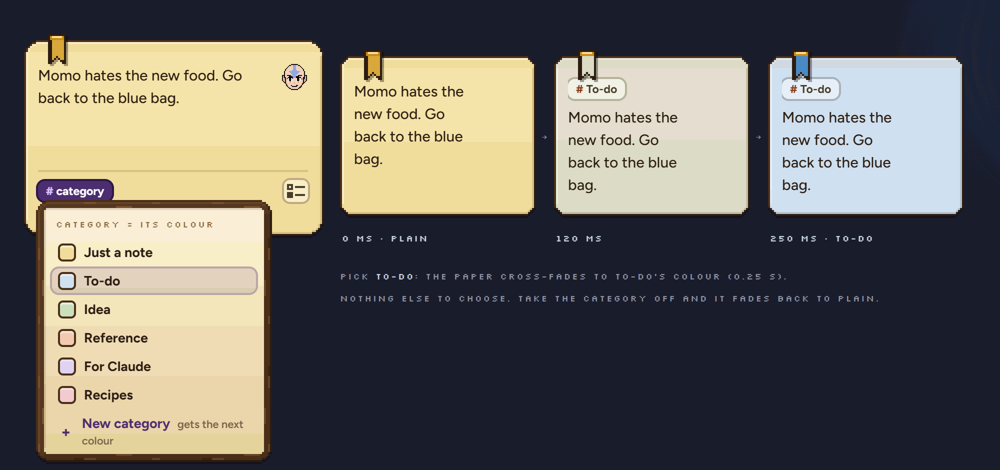
Your note: "that brown note pin is hideous, is there nothing else in the design language?" Three small options from it, never over the top. Each is shown on the same note, with its corner blown up so you can see the pixels.
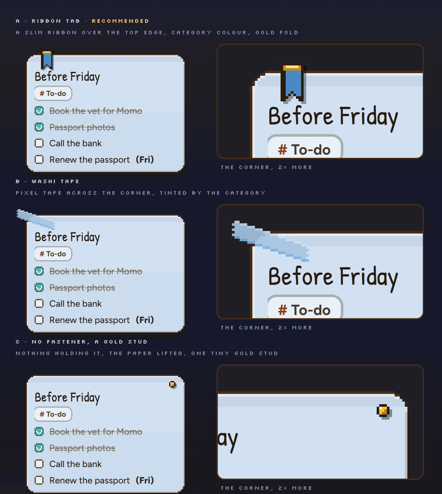
Why A: it is a quest-log bookmark (your journal ribbons, his gold), it carries the category colour so it says something, and it is the smallest of the three. B is cute but busier; C is the calmest but the note looks loose.
Ctrl + * opens a normal note, just small, empty and ready to type. Every note has the same row at the bottom: # category, the checklist key, and Aang can bring this up. No colour dots any more: the category is the colour.
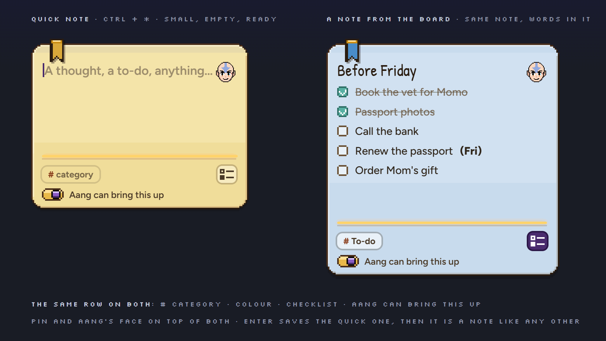

Your note: "is it always going to be there? I might prefer it as a right rail, opened when we activate it, probably in the ... menu." Done. Nothing in the band any more. Samara's own ... menu gets one row, Notes for this site, under Find. It opens a rail on Samara's right edge: it slides in on a spring and the page narrows beside it, so nothing is covered. It lists this site's notes on their category paper and + note for this site. Close it with its x or Esc.
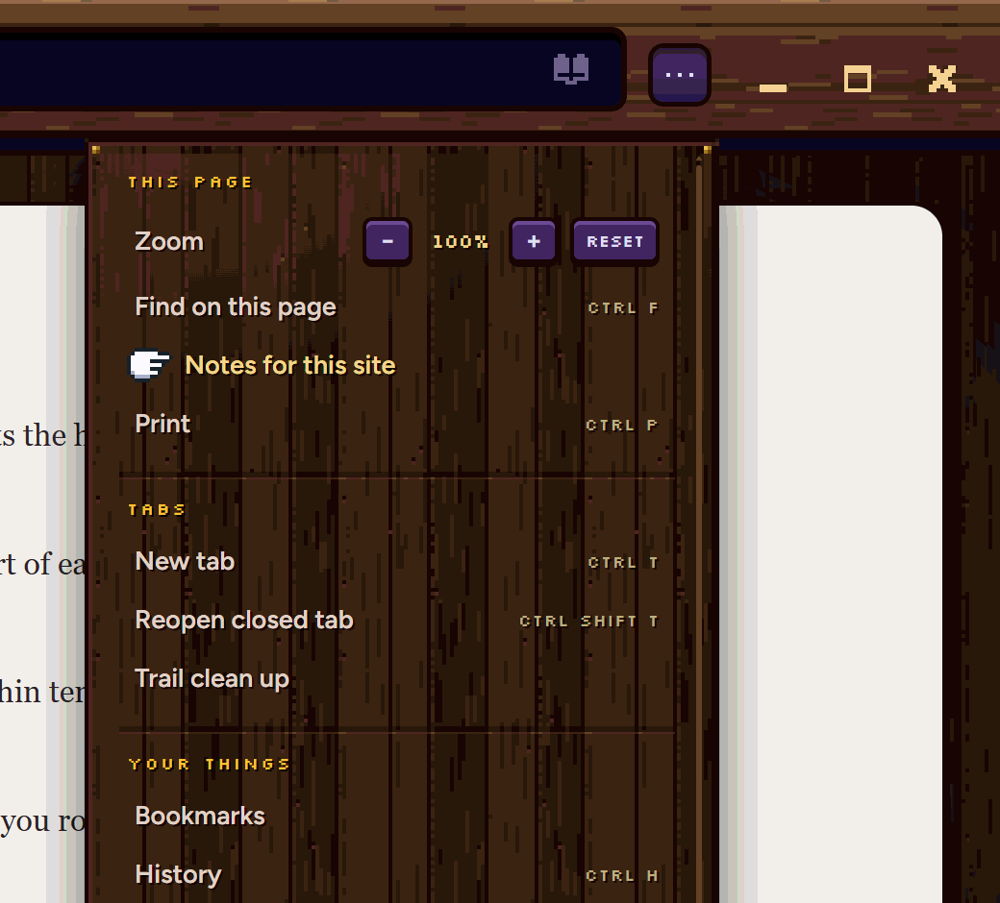
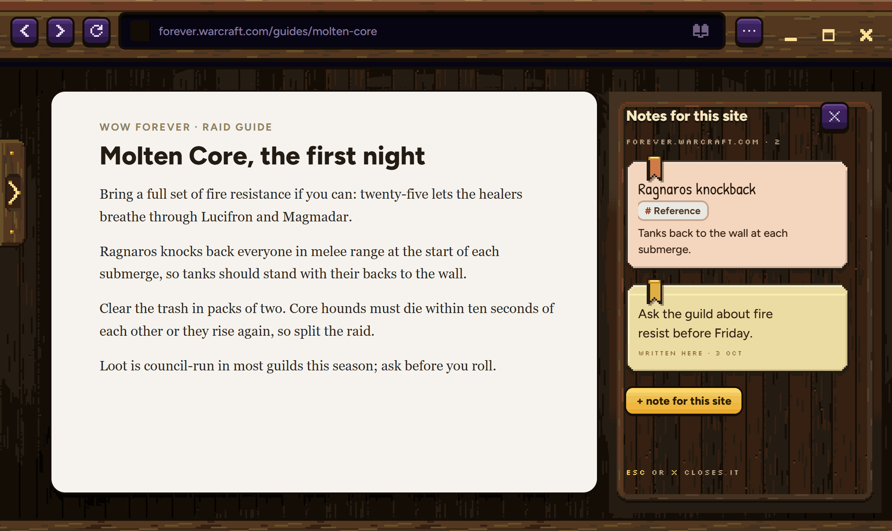
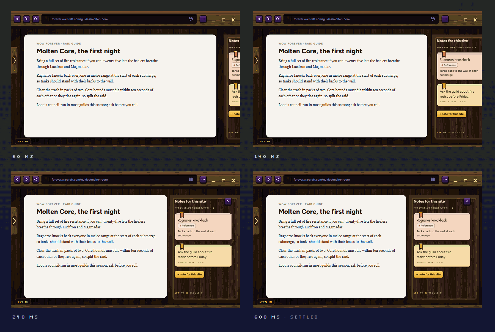


Your note: "shouldn't this surface a bit more, this is boring." Three livelier ways, still calm. In all three his one line is in his bubble and the note's name in it is the door: click it and the note opens. These are his real bubble (look B, the S2 rim), shown at real size, each in three moments.
THE RULE While a game runs, noticing is off entirely: Qwen does not read, nothing is shown, no mark, nothing queued (unless it still matters after the game). Same while Claude is in front. No new icon for notices, ever.
The real note rises from behind him on a spring, the line that matters marked in gold, with three keys right on it: Tick it (for a to-do), Open, Later (snoozes it). Tick or Later and it sinks back down. (Not tilted: pixel art can't turn a few degrees and stay crisp.)
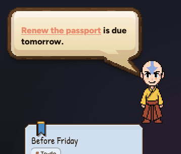
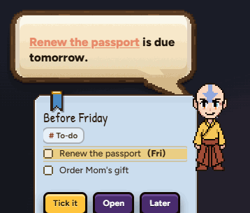
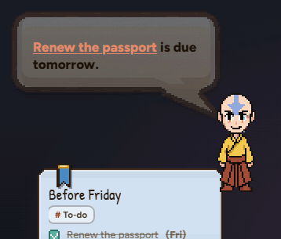
A little paper in his hands, the gold line on it, the words in his bubble. Click the paper or the line to open the note. The smallest of the three; no keys.
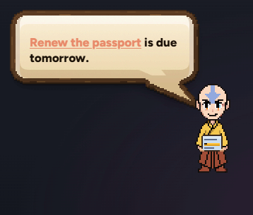
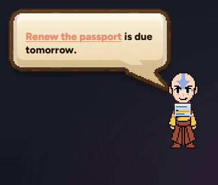
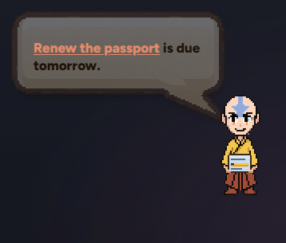
The note's line quoted on its own paper colour inside the bubble, with the bubble's own keys: Tick it, Open, Later. Everything in one place, but it is still a bubble.
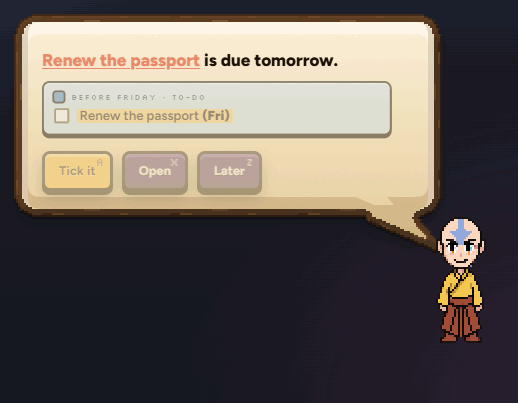
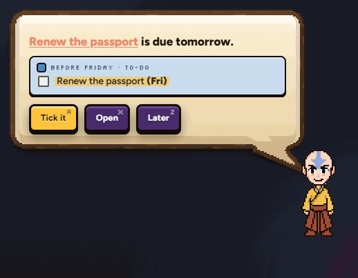
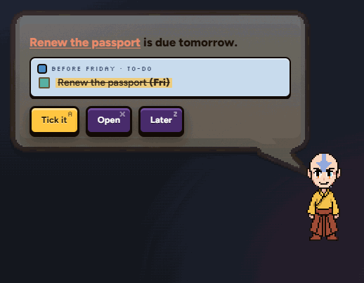